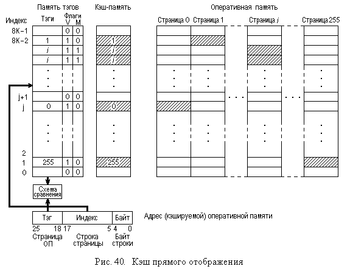
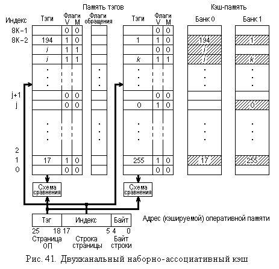

4.2. Методы повышения производительности памяти ЭВМ
4.2.1. Использование кэш-памятиПамять ЭВМ всегда считалась одним из “узких” мест, поэтому проблемы повышения ее производительности никогда не выпадали из внимания разработчиков архитектуры ЭВМ и системного программного обеспечения. Фактически, общим решением, используемым для достижения этой цели, является многоуровневая организация системы памяти, на разных уровнях которой применяются несколько различные механизмы управления.
Кроме того, в разных вычислительных системах память часто по-своему связывается с процессором (процессорами) и остальными устройствами для того, чтобы создать наиболее производительные тракты передачи данных в память и из нее.
В операционных системах используются также и различные алгоритмические приемы, направленные на достижение той же цели, хотя это возможно только на более медленных уровнях системы памяти.
Некоторые из названных способов и рассматриваются в настоящей главе.
4.2.1. Использование кэш-памяти
Собственно концепция многоуровневой памяти обсуждалась в главе 1, где и был приведен пример подсчета среднего времени обращения к памяти, состоящей из двух ступеней (кэш-памяти и оперативной памяти). И хотя задачи управления иерархией памяти для разных уровней одинаковы по содержанию, реализация их различна, в первую очередь, из-за отличий в быстродействии и информационных емкостях разных уровней.
Кэш-память находится на верхних уровнях иерархии памяти, играет роль своего рода буфера между процессором и оперативной памятью, обеспечивая ускорение доступа к последней.
Как отмечалось ранее, кэш может иметь несколько уровней: уровень L1 или внутренний, уровень L2, ранее называемый внешним, но уже давно переместившийся внутрь процессора. В больших системах встречается и кэш третьего уровня.
В связи с высокими скоростями работы перечисленных устройств
управление кэш-памятью должно обеспечить решение ряда задач, связанных
- с быстрым определением местоположения требуемой информации в двухуровневом
фрагменте (кэш L1–кэш L2 или кэш L2 – оперативная память) системы памяти;
- выбором информации, которую можно удалить из верхнего уровня при
необходимости занесения в него новой информации и отсутствии в нем свободного
места;
- поддержанием соответствия между копиями одной и той же информации,
располагающейся в разных ступенях памяти.
Последнее иначе называют когерентностью данных, используя аналог физического термина.
В зависимости от конкретной архитектуры и модели ЭВМ вышеназванные задачи могут решаться по-разному. Однако общие принципы их решения, в целом, схожи.
Поскольку в кэш-памяти в каждый конкретный момент хранится только часть информации, размещенной в запоминающем устройстве более низкого уровня (для определенности, пусть это оперативная память), то при обращении к этому запоминающему устройству (со стороны процессора или другого узла) необходимо определить, не находится ли копия требуемой информации в кэш-памяти. Если она там есть, то обращение может быть быстро обслужено кэш-памятью, в противном случае, информацию придется извлекать из оперативной памяти (или заносить в нее), что займет примерно на порядок большее время.
Определять, имеется ли запрошенная информация в кэш-памяти или нет, приходится в процессе обслуживания обращения к памяти. Понятно, что время этой операции непосредственно включается во время обращения и должно быть существенно меньше собственно времени обращения к кэш-памяти *). Конечно, с точки зрения логики реализации такого поиска для этой цели хорошо подходит память с ассоциативным доступом (см. п.1.2.2, подпункт 3). Однако такая память достаточно дорога, чтобы использовать ее в качестве кэш-памяти. Поэтому приходится либо прибегать к специальным ограничениям на место расположения информации в кэш-памяти, либо сочетать этот прием с ассоциативным доступом, что дает несколько различные схемы ее организации. Представителями этих вариантов являются кэш прямого отображения и наборно-ассоциативный кэш.
Кэш прямого отображения
Кэш прямого отображения представляет собой наиболее простой с точки зрения аппаратных затрат вариант решения задачи быстрого определения того, имеется ли в данный момент в кэш-памяти информация, затребованная очередным обращением к оперативной памяти (здесь и далее, как отмечалось, для определенности обсуждаются два смежных уровня системы памяти: кэш и оперативная память; ясно, что это должен быть кэш второго уровня L2). Это обеспечивается посредством жесткой привязки физических адресов оперативной памяти к адресам кэш-памяти.
При такой организации кэш-памяти вся кэшируемая оперативная память (обычно, это было 64 Мбайта) условно разбивается на равные страницы, размер которых равен емкости кэш-памяти, что показано на рис. 40. Кэш, в свою очередь, разбивается на строки по 32 байта, соответствующие одному стандартному пакетному циклу обращения к динамической памяти (4 передачи по 8 байт). На такие же строки условно разделяются и страницы оперативной памяти. Именно такими строками и осуществляется обмен информацией между кэш-памятью и ОП, поскольку вероятность использования смежных слов памяти достаточно высока (так называемый принцип локальности обращений).

При таком разбиении адрес кэшируемой памяти можно рассматривать
как состоящий из трех частей, показанных в нижней части рисунка:
- номера страницы оперативной памяти, называемого иначе тэгом и расположенного
в старших разрядах адреса (разряды 25 – 18);
- номера строки в странице, называемого индексом и занимающего средние разряды
адреса (разряды 17 – 5);
- номера байта в строке, занимающего младшие пять разрядов адреса.
Привязка адресов кэшируемой памяти к адресам кэш-памяти, о которой сказано выше, состоит в том, что в каждую строку кэш-памяти можно занести строку из любой страницы кэшируемой памяти, но только ту, которая имеет в странице такое же расположение относительно начала страницы, как и строка кэш-памяти, относительно ее начала. Иначе говоря, номер строки в странице оперативной памяти должен соответствовать индексу строки кэш-памяти, чтобы ее можно было туда занести.
При этом, когда кэшируемая строка заносится в кэш-память, в память тэгов, каждая ячейка которой соответствует одной строке кэш-памяти, записывается номер страницы оперативной памяти, к которой относится занесенная в кэш строка.
Такая организация и позволяет предельно быстро, не используя никаких поисковых схем, определить, находится ли в кэш-памяти строка, содержащая адрес оперативной памяти, по которому должно быть выполнено обращение. Для этого требуется только сравнить старшие разряды адреса, по которому выполняется обращение, т.е. его страницу или тэг, с тэгом строки кэш-памяти, которой этот адрес соответствует, что определяется его разрядами с 17-го по 5-й. Поэтому в начале каждого обращения контроллер памяти считывает соответствующий тэг из памяти тэгов по данному адресу. Если номер страницы и тэг совпадут, то искомая информация находится в кэш-памяти (это называют попаданием – hit – в кэш), в противном случае – в оперативной памяти (тогда говорят о кэш-промахе – miss).
Однако оперативная память используется не только процессором, имеются механизмы доступа к ней, минуя процессор. Поэтому может оказаться, что информация, хранящаяся в кэш-памяти, кэширует ту область ОП, в которую будет выполнена запись другим устройством. В этом случае будет нарушено соответствие между данными в кэш-памяти и в ОП.
Для обработки таких ситуаций предусмотрен флаг V (validity – действительность), устанавливаемый в единичное значение при загрузке строки в кэш-память и сбрасываемый в нулевое значение, если информация в оперативной памяти, копия которой имеется в кэш-памяти, была обновлена. Поэтому при определении того, находится ли запрошенная информация в кэш-памяти, производится не только сравнение тэга строки с номером страницы ОП, но и проверка действительности строки по значению флага V.
Достоинствами кэш-памяти прямого отображения является высокая скорость определения того, имеется ли в ней запрашиваемая информация и простота его организации. В ней также не приходится решать вторую из названных выше задач управления кэш-памятью: определение строки – кандидата на удаление при необходимости ввода новой строки из ОП, поскольку место строк в кэше жестко привязано к их адресам в ОП.
Но эта простота не лишена недостатков. Основной из них – это невысокая эффективность использования кэш-памяти, так как в ней нельзя разместить одноименные строки (группы строк) различных страниц. Поэтому, если приложение работает с несколькими сегментами, одинаково расположенными в различных страницах памяти (например, выполняет операцию попарного умножения элементов двух массивов), кэш может оказаться даже своего рода “тормозом”, вызывающим интенсивный дополнительный обмен между оперативной памятью и кэшем.
Если искомая информация находится в кэш-памяти, то процессор получает эту информацию непосредственно из кэша при чтении или записывает ее в кэш при записи.
Обращение по чтению можно начинать сразу и к кэш-памяти и к оперативной памяти. Тогда, если информация отсутствует в кэш-памяти, к моменту установления этого факта будет уже выполнена часть цикла обращения к оперативной памяти, что может повысить производительность. Если информация имеется в кэше, то обращение к оперативной памяти можно остановить. Конечно, и здесь есть свои плюсы и минусы.
При обращении по записи тоже возможны два варианта (две политики записи): запись производится только в кэш или сразу и в кэш и в оперативную память по месту расположения в ней этой информации. Эти два варианта получили название алгоритмов обратной записи WB (Write Back) и сквозной записи WT (Write Through) соответственно. Второй из них более простой, но и более медленный, хотя и гарантирует, что копии одной и той же информации в кэш-памяти и в оперативной памяти всегда совпадают. Большинство ранних процессоров Intel использовали именно этот алгоритм.
Алгоритм обратной записи WB более быстродействующий, так как не требует при каждой записи обращаться к оперативной памяти. Запись информации в оперативную память производится только тогда, когда на место данной строки кэша вводится строка из другой страницы ОП или при выполнении команды обновления содержимого кэша. Следовательно, этот алгоритм более “тонкий” и требует более аккуратного управления, поскольку существуют моменты, когда копии одной и той же информации различны в кэше и ОП.
Кроме того, для реализации обратной записи желательно наличие некоторых дополнительных средств: ведь не каждая строка изменялась за время своего пребывания в кэше, куда она изначально была загружена из оперативной памяти. Если изменений строки не было, то нет и необходимости записывать ее обратно в оперативную память. Для экономии времени на таких записях необходимо уметь определять, производились ли модификации строки за то время, пока она находилась в кэш-памяти. Для этой цели используют флаг M (modified – изменена) в памяти тэгов, который сбрасывается в “0” при первоначальной загрузке строки в кэш и взводится в “1” при записи в нее информации. Тогда при выгрузке строки из кэша запись в ОП выполняется только при единичном значении флага M.
*) Обычно обращение начинают сразу к оперативной и к кэш-памяти, и если информация будет найдена в кэш, то обращение к оперативной памяти прекращается.
Наборно-ассоциативный кэш
Устранить неэффективное использование места в кэш-памяти прямого отображения можно, применяя ассоциативный доступ. Однако, помимо того, что память с таким доступом более дорогая, она обеспечивает меньшую скорость поиска нужной информации (точнее, выявления факта ее наличия или отсутствия), чем рассмотренная выше схема прямого отображения.
Поэтому полностью ассоциативный кэш используется редко и только на уровне L1. Как обычно, более приемлемым техническим решением оказывается сочетание механизма прямого отображения и ассоциативного поиска. Именно так и организован наборно-ассоциативный кэш, двухканальный (two ways) вариант которого показан на рис. 41, кэшируемая оперативная память на котором не показана (в отличие от предыдущего рисунка).

Как видно, этот кэш, по сути, представляет собой сдвоенный кэш прямого отображения. Каждый банк кэш-памяти в паре со связанным с ним одним блоком тэговой памяти работает по схеме кэша прямого отображения. Однако наличие двух банков позволяет размещать в двухканальной наборно-ассоциативной кэш памяти сразу две строки, расположенные одинаково по отношению к границам двух различных страниц кэшируемой памяти. Например, на рис. 41 в строках банков кэш-памяти, имеющих индекс 1, размещены строки с этим же индексом из 17-й и 255-й страниц кэшируемой памяти.
При обращении к памяти поиск нужной строки в кэше выполняется точно так же, как и в кэш-памяти прямого отображения, только этот поиск производится сразу для двух банков (точнее, в двух блоках тэговой памяти). Собственно в этом и заключается все, что можно отнести к термину “ассоциативный” в названии этого типа памяти. Однако это различие оказывается достаточным, чтобы заметно повысить вероятность нахождения в кэше нужной информации и производительность памяти в целом. На практике в процессорах начала 2000-х годов использовалась четырех- и восьмиканальная наборно-ассоциативная кэш-память второго уровня.
На рис. 41 есть еще один блок – “флаги обращения”, который отсутствовал в кэш-памяти прямого отображения. Этот блок используется для решения второй из задач управления кэш-памятью: определением той строки, которую приходится удалять при необходимости ввода в кэш новой строки и отсутствии в нем свободного места. В кэш-памяти прямого отображения такую задачу решать не приходилось, так как место для размещения любой строки определялось однозначно и при вводе новой строки удалялась информация, которая ранее на этом месте располагалась.
В рассматриваемой схеме ситуация несколько иная: здесь ввод новой строки можно выполнить в один из банков, но в какой? Для решения этой задачи используют специальные правила, называемые алгоритмами замещения. Эти правила используются во всех случаях, когда приходится вводить новую информацию в более быструю, но менее емкую ступень памяти из более медленной и более емкой. В данном разделе эти правила не рассматриваются, но одно из них, применяемое чаще всего, заключается в удалении той информации, к которой дольше всего не было обращений. В англоязычной литературе этот алгоритм называют LRU – least recently used, что буквально означает “наименее недавно использованный” или, говоря по-русски, наиболее давно использованный.
Для реализации этого алгоритма и нужны флаги обращения, в каждом из которых фиксируется, к какой из двух соответствующих флагу строк было последнее обращение. В двухканальной наборно-ассоциативной архитектуре для этого достаточно по одному биту на каждую пару строк.
Решение задачи поддержания соответствия (целостности, когерентности) между копиями одной и той же информацией в кэш- и оперативной памяти не зависит от организации кэш-памяти. Это соответствие может нарушиться в тех случаях, когда какой-либо блок ЭВМ производит запись отдельно либо в кэш, либо в ОП. Таким блоком может быть или процессор, или иное устройство (пока речь идет об однопроцессорной системе).
Выполнить запись в кэш-память может только процессор (если не считать процедуру загрузки строки в кэш). Поэтому временное несоответствие информации в кэш-памяти и в ОП может возникнуть только при использовании политики обратной записи (см. выше). Однако за поддержанием целостности информации в этом случае следит контроллер.
Запись только в ОП может выполнить другое устройство (например, по шине PCI), причем если эта запись производится в ту область ОП, копия информации из которой имеется и в кэш-памяти, то эту копию следует пометить как недействительную.
Несколько более сложные проверки приходится выполнять в многопроцессорных системах, так как в них может существовать сразу больше двух копий информации, например, одни и те же данные могут быть кэшированы несколькими процессорами. Процессоры семейства x86 Intel поддерживают специальный протокол слежения за состоянием данных в кэш-памяти, называемый по первым буквам различимых состояний строк кэша MESI (Modified – Exclusive – Shared – Invalid – модифицированная, монопольная (в одном кэше), разделяемая (может находиться в нескольких кэшах) и недействительная (отсутствует в кэше или содержит устаревшую информацию)).